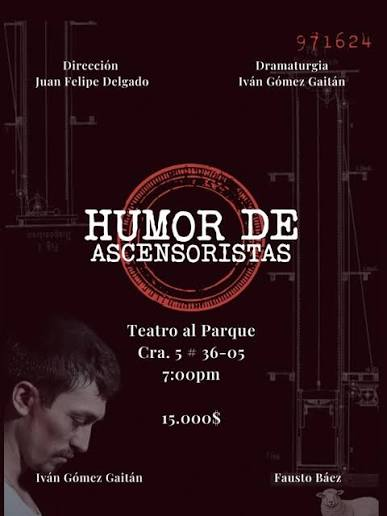

01 / 02
Humor de Ascensoristas
- Autoría
- Iván Gómez Gaitán
- Fecha
- 2022 (reconocimiento) · presentación en Bogotá en 2024
- Tipo
- Teatro
- Lugar
- Congreso de la República
- Temas
- Vida cotidiana
- Mirada
- La nostálgica
- Impacto
- Volvería a ella
- Reacción
- Deja pensando
«Hacía tantos años que no alzaba la cara, que me olvidé del cielo».
— Juan Rulfo, Pedro Páramo
Bienvenido a esta colección. Antes de comenzar, quiero invitarte a hacer algo sencillo: detente un momento. Ahora que me lees, tómate unos segundos para mirar el lugar en el que estás. ¿Dónde te encuentras? ¿Qué es lo primero que ves? ¿Qué sonidos llegan hasta ti? ¿Hay algo a tu alrededor en lo que nunca antes te habías detenido?
A veces transitamos los mismos lugares tantas veces que dejamos de mirarlos. Caminamos por las mismas calles, repetimos nuestros recorridos, coincidimos con otras personas y nos acostumbramos a los paisajes que nos rodean. La prisa convierte los días en una sucesión de actividades y, casi sin darnos cuenta, dejamos de reparar en aquello que también forma parte de nuestra vida.
Sin embargo, la ciudad no ocurre únicamente en sus grandes acontecimientos. También está en los trabajos que pasan inadvertidos, en las conversaciones fugaces, en los encuentros inesperados, en los lugares que habitamos y en esos pequeños momentos que parecen no tener mayor importancia. Allí también hay historias, contrastes y maneras de comprender quiénes somos y cómo vivimos Bogotá.
He escogido estas obras porque quiero invitarte a descubrir esas otras formas de contar nuestra ciudad. A mirar con curiosidad lo que quizás ya conoces, a encontrar belleza en lo habitual y a reconocer que incluso las escenas más sencillas pueden despertar preguntas, recuerdos y nuevas maneras de percibir nuestro entorno.
En un mundo que cada día parece avanzar más deprisa, detenernos también puede ser una pequeña revolución. Contemplar no significa alejarnos de lo que sucede, sino estar más presentes en ello. A veces, basta con prestar atención para descubrir que aquello que creíamos conocer todavía tiene mucho por mostrarnos.
¿Cuánto de tu ciudad has dejado de mirar por estar acostumbrado a ella?
Recorrer las obras ↓COLECCIÓN 01 / 07
Las historias que habitan lo común.

01 / 02
¿Cuántas historias pueden permanecer escondidas detrás de las puertas de un lugar que creemos conocer?
En Humor de Ascensoristas, Iván Gómez Gaitán entrelaza las vidas de Pedro, un antiguo ascensorista del Congreso que, en su vejez, se prepara para una nueva entrevista de trabajo, y Marcos, un joven soldado que enfrenta la inminencia de la muerte en una zona de guerra. Sus historias se encuentran en un relato atravesado por los recuerdos, las ausencias y la necesidad de encontrar respuestas o despedirse.
La obra nos invita a mirar más allá de los espacios que habitualmente asociamos con la vida institucional de Bogotá. A través de Pedro, recupera la figura de quien, desde un oficio cotidiano y muchas veces inadvertido, también ha sido parte de la historia de un lugar. Porque detrás de los edificios que reconocemos, de los trabajos que pocas veces nombramos y de los encuentros que parecen pasajeros, existen vidas enteras, recuerdos y sentimientos que merecen ser escuchados.
Entre la nostalgia, la soledad y el arrepentimiento, Humor de Ascensoristas nos recuerda que la ciudad también se construye con las historias de quienes la habitan y la recorren cada día.
No siempre necesitamos recorrer grandes distancias para descubrir algo nuevo. A veces basta con detenernos a mirar aquello que tenemos delante.
¿Qué estás viendo en este momento? Puede ser una calle por la que pasas todos los días, una ventana, un árbol que crece entre el concreto, una persona trabajando, un paisaje que te gusta o un pequeño detalle que normalmente pasaría inadvertido.
Te invitamos a compartir una fotografía de Bogotá: puede ser algo que estés contemplando mientras recorres esta colección o una imagen que hayas guardado porque significa algo para ti.
Cada mirada es distinta y, cuando las reunimos, descubrimos que nuestra ciudad tiene muchas más formas de ser contada.
Puedes participar subiendo una fotografía y contándonos dónde la tomaste y qué llamó tu atención. Google Forms solicitará iniciar sesión para adjuntar imágenes.
Compartir mi fotografía ↗Hay ciudades que reconocemos por sus paisajes, sus calles y sus edificios, pero también por los sonidos que las acompañan.
En Sonidos Bogotanos, el director Omar Mosquera nos propone acercarnos a esa dimensión sonora de Bogotá. El tráfico, el perifoneo, las construcciones y los sonidos de la naturaleza componen un paisaje que, aunque muchas veces confundimos con ruido, también hace parte de nuestra identidad.
Te invitamos a ver este documental y a escuchar con otros oídos esa ciudad que recorremos todos los días. Quizás descubras que algunos de los sonidos que más te representan estaban ahí desde siempre, esperando a que les prestaras atención.
Sonidos Bogotanos · Omar Mosquera N. · Colombia, 2024 · Documental · 6 minutos. Forma parte de la serie Bogotario.
Ver documental en Retina Latina ↗